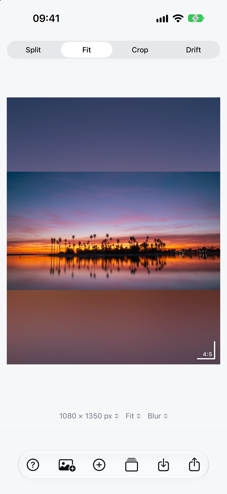
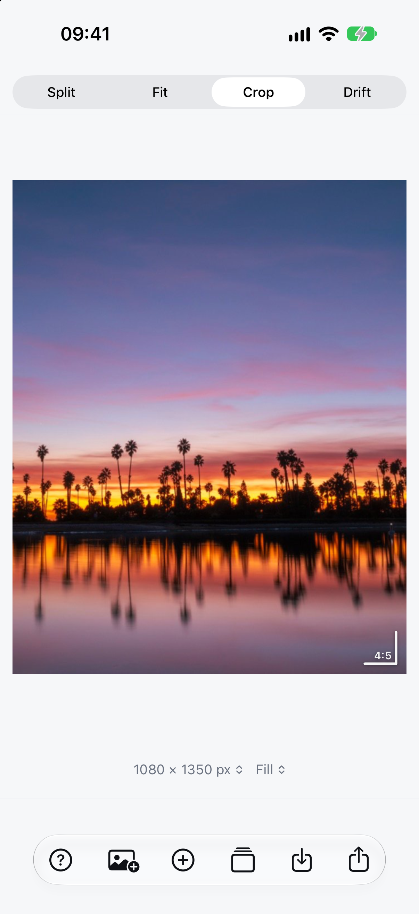
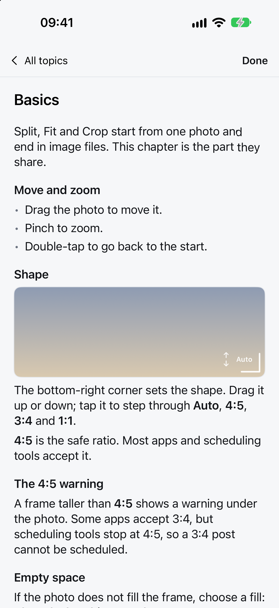

Split
Cut one wide photo into 2–5 slides that line up across a post. Each slide is its own file, numbered in order.
I shoot wide landscape photos, but phone screens are tall — the layout is portrait, not landscape. A wide photo either sits small in the middle, or fills the frame and loses its sides. Handscroll cuts one panorama into carousel slides: swipe through them and you see the whole picture. It fills the empty space with a blur, makes a tall crop, and turns a still into a slow pan.
Free · No account · Nothing leaves the phone
The app



Ways to post
Cut one wide photo into 2–5 slides that line up across a post. Each slide is its own file, numbered in order.
The whole photo inside a tall 4:5 frame. The empty space becomes a blur, black, white or a colour; a slider darkens the blur.
A tall crop in 4:5, 3:4 or 1:1. Drag the corner to step through the shapes, then place the photo with a drag or a pinch.
A slow pan across the photo, exported as an 8-second video. Set where it starts, where it ends, and how long it runs.
Add up to ten photos, record up to five steps, then run the whole recipe in one export.
A built-in guide to every control, plus the 4:5 warning when a taller frame will get cropped elsewhere.
Privacy
Where it's at
The iPhone app is with Apple now, and this page gets the App Store link when it's out. The browser version below is the same tool without the photo library — it runs entirely in the tab.